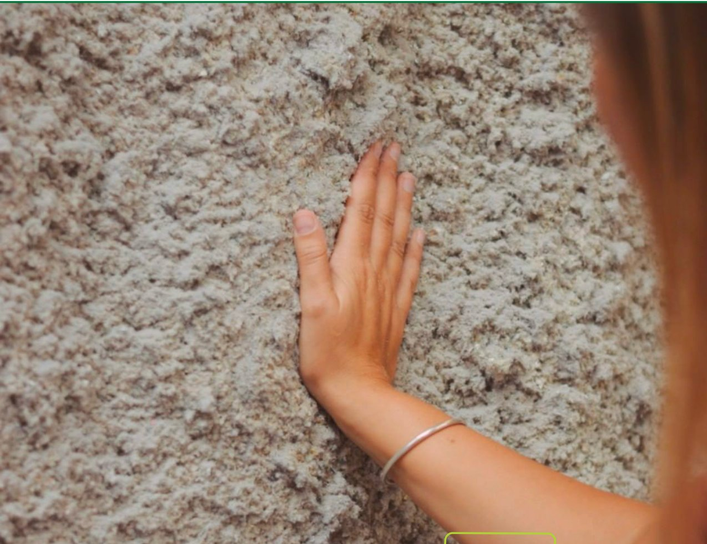
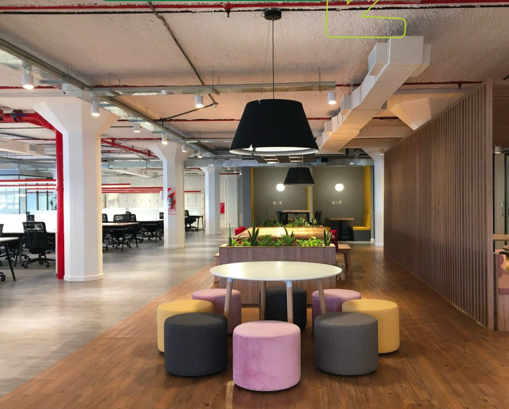
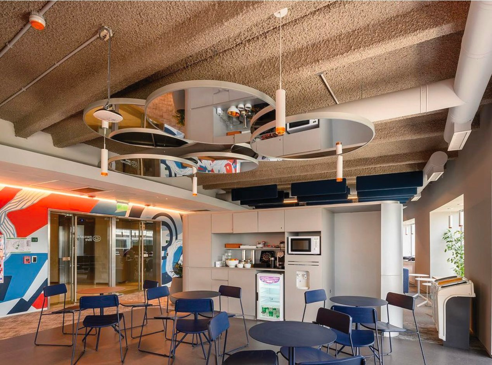
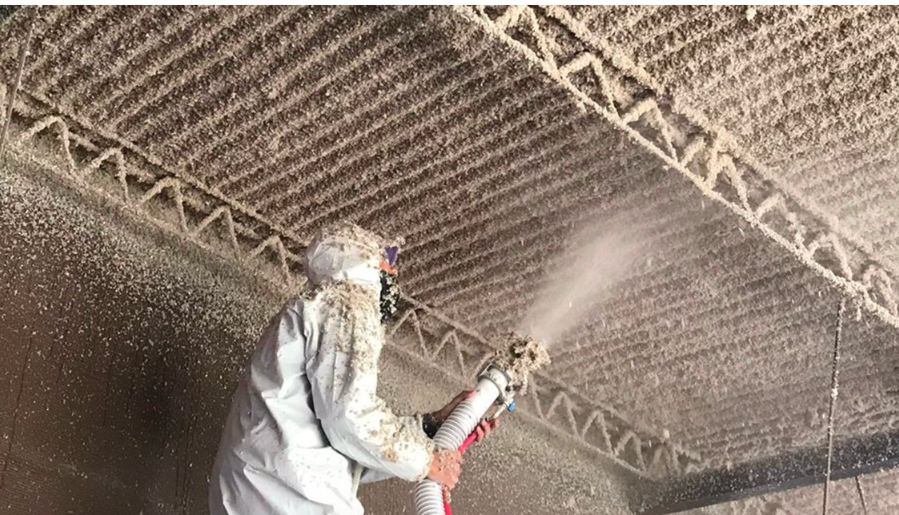
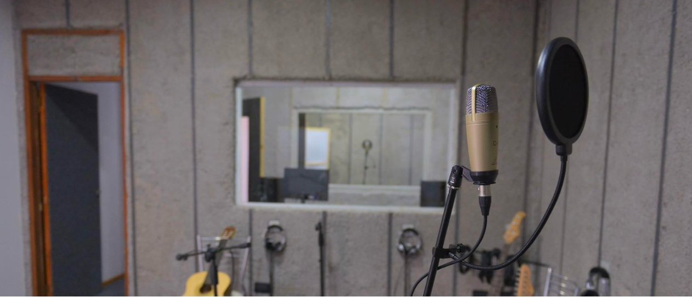
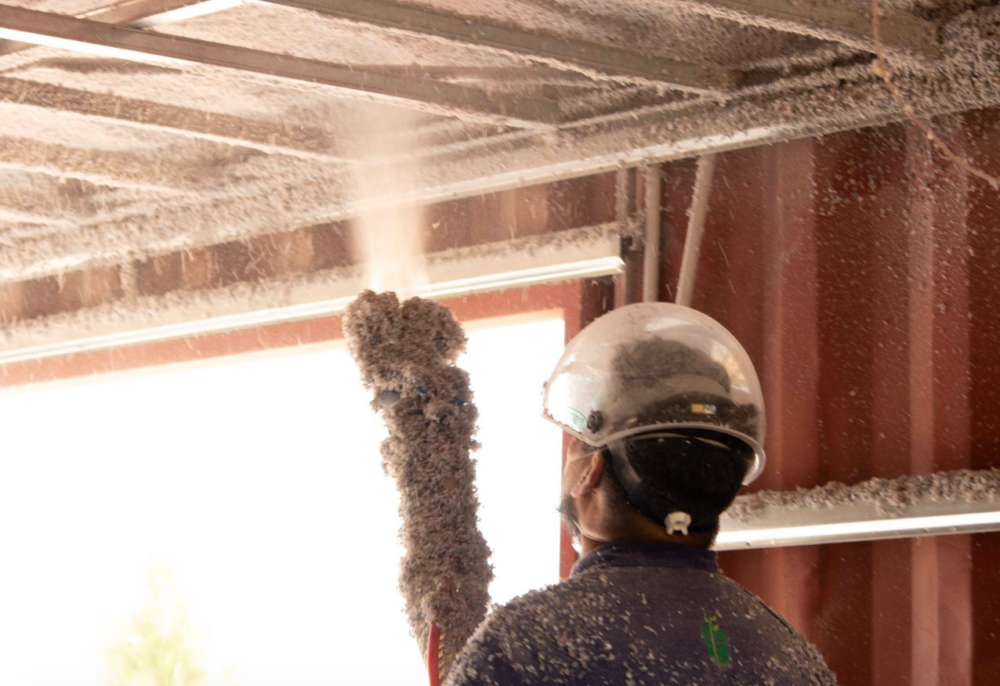
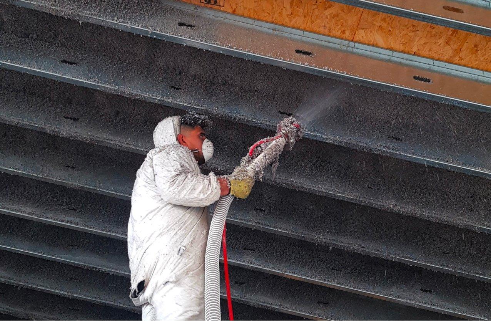
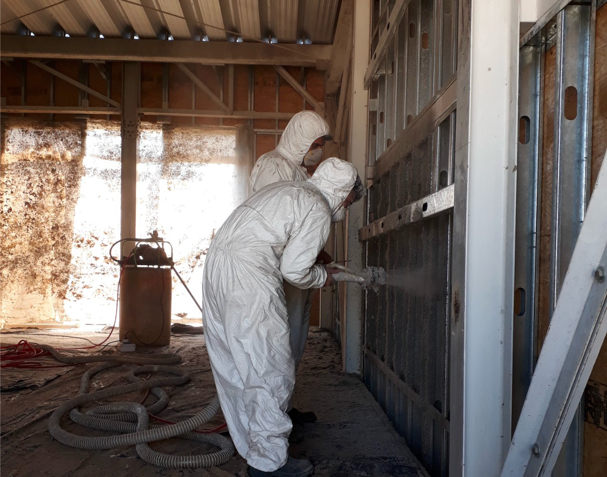
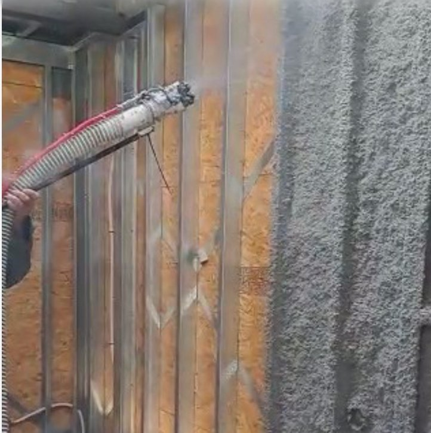

Menos calor. Menos frío. Menos ruido.
Sin obra invasiva.
Reducí el calor en verano hasta 8°C, ahorrá hasta 40% en calefacción y aire acondicionado, y mejorá el confort acústico de tu casa, local, oficina o galpón. Instalación rápida, limpia, sin romper ni mudar.
La celulosa proyectada es un aislante térmico y acústico fabricado a partir de 85% papel y cartón reciclados, tratado con sales bóricas que le confieren propiedades ignífugas, fungicidas y repelentes de insectos y roedores.









La falta de aislación no solo impacta en el confort, sino también en tu bolsillo y en la salud de tu familia o empleados.
El techo de chapa se calienta al sol y la temperatura interior sube sin control. Ventiladores y aires acondicionados en máxima no alcanzan.
La calefacción está al máximo pero el ambiente no llega a temperatura. El frío entra por techos y paredes sin aislación.
Consumo constante de calefacción y aire acondicionado que nunca alcanzan. La energía se escapa y el gasto no para.
Lluvia sobre chapa, tránsito, vecinos, maquinaria. El sonido se amplifica en lugar de absorberse, imposibilitando el descanso o la concentración.
En galpones y casas con techos de chapa, la condensación gotea y forma charcos. Humedad en paredes, riesgo de moho, daño a mercadería.
Las soluciones tradicionales requieren romper paredes, levantar techos, generar escombro y mudarte o cerrar el local por días.
Instalación profesional de aislante térmico y acústico de alta eficiencia, en 1-2 días, sin romper ni mudar.
La estructura fibrosa de la celulosa atrapa aire en cavidades microscópicas, reduciendo la transferencia de calor por conducción y convección. Almacena calor antes de transferirlo, estabilizando la temperatura interior.
Las ondas sonoras quedan atrapadas en las fibras de celulosa, donde la energía acústica se transforma en calor. Reduce ruido aéreo (voces, tránsito) y de impacto (lluvia, pasos).
Proyección o insuflado sin demolición ni mudanza. Aplicación seca que no genera escombro ni humedad. Vivienda promedio en 1-2 días, galpones en 2-4 días según superficie.
A diferencia de otros aislantes, la celulosa tiene una capacidad térmica específica de 2.11 kJ/(kg·°K), significativamente superior a espuma de poliuretano (1.4 kJ/kg·°K) y fibra de vidrio (0.795 kJ/kg·°K).
¿Qué significa esto en la práctica? La celulosa puede almacenar calor por más tiempo antes de transferirlo al interior. Resultado: inercia térmica que estabiliza la temperatura interior durante más horas, reduciendo picos de calor en verano y pérdidas en invierno.
Desde tu consulta hasta la instalación terminada, cada paso está diseñado para que sea simple, rápido y sin sorpresas.
Completás el formulario o nos contactás por WhatsApp. Nos contás qué tipo de propiedad tenés, superficie aproximada y qué problema querés resolver.
Analizamos tu caso y te enviamos un presupuesto orientativo vía email o WhatsApp, con espesor recomendado y estimación de costo.
Si estás en GBA Norte, CABA o GBA Oeste, coordinamos una visita técnica sin cargo para evaluar el estado de la estructura y ajustar el presupuesto final.
Una vez aceptado el presupuesto, coordinamos la fecha de instalación. No necesitás mudarte ni cerrar tu local.
Llegamos con el equipo, preparamos el área, proyectamos o insuflamos el aislante según el caso, y dejamos todo limpio. Sin escombro, sin romper, sin humedad.
Antes de irnos, verificamos la aplicación y entregamos la documentación de garantía. Podés empezar a disfrutar del confort térmico y acústico de inmediato.
La celulosa proyectada e insuflada es versátil y se adapta a viviendas, comercios, industria y construcción en seco.
Techos de chapa, losa, paredes interiores y entrepisos. Reduce calor en verano, conserva calefacción en invierno, y aísla del ruido exterior.
Mejora el confort de clientes y empleados, reduce ruido de cocina y maquinaria, y disminuye consumo de climatización.
Reduce reverberación y mejora inteligibilidad del habla. Confort térmico que permite concentración y productividad.
Control de condensación, protección de maquinaria sensible a temperatura, y confort de empleados.
Aislación obligatoria en muros y techos de sistemas constructivos modernos. La celulosa se adapta perfectamente a cavidades.
Mejora la inteligibilidad del habla en aulas, reduce reverberación y crea un ambiente propicio para el aprendizaje.
Más allá del confort térmico y acústico, la celulosa tiene beneficios que otros aislantes no ofrecen.
Fabricado a partir de papel y cartón reciclados. Huella de carbono mínima. Opción sustentable y consciente para tu proyecto.
Tratamiento con sales bóricas que retarda la propagación de llama. Clasificación RE-2 Clase A por INTI. No emite gases tóxicos como los sintéticos.
Sales bóricas actúan como repelente natural. A diferencia de lana de vidrio donde anidan, la celulosa los mantiene alejados.
Capacidad higroscópica: absorbe y libera humedad sin afectar rendimiento térmico. Previene condensación y moho.
No se rompen paredes ni techos. No hay escombro ni mudanza. Vivienda promedio en 1-2 días. Galpones en 2-4 días.
Ahorro del 30-40% en climatización. En propiedades sin aislación previa, hasta 50%. Amortización rápida por reducción de consumo energético.
La celulosa de EcoAislación® está tratada con ácido bórico y boro pentahidratado (o fosfato de amonio según el lote), compuestos que le confieren tres propiedades críticas de seguridad:
Validación: Todos los lotes de celulosa de EcoAislación® son ensayados por el INTI (Instituto Nacional de Tecnología Industrial) para garantizar cumplimiento normativo en propagación de llama, densidad de humos y corrosión de metales.
No todos los aislantes son iguales. Conocé las diferencias entre celulosa, poliuretano y lana de vidrio.
| Característica | Celulosa proyectada | Poliuretano expandido | Lana de vidrio |
|---|---|---|---|
| Aislación térmica | ✓ Excelente (λ = 0.039) | ✓ Excelente (λ = 0.022-0.028) | ✓ Buena (λ = 0.035-0.045) |
| Aislación acústica | ✓ Superior | ⚠ Media-baja | ✓ Buena |
| Inercia térmica (capacidad térmica) | ✓ 2.11 kJ/kg·°K | ⚠ 1.4 kJ/kg·°K | ✗ 0.795 kJ/kg·°K |
| Gestión de humedad | ✓ Higroscópica (absorbe y libera) | ✗ No transpirable | ⚠ Media |
| Obra no invasiva | ✓ Sí | ⚠ Requiere preparación | ✗ Requiere demolición |
| Material ecológico | ✓ 85% reciclado | ✗ Químico sintético | ⚠ Parcial |
| Comportamiento ante fuego | ✓ Ignífugo no tóxico | ✗ Emite gases tóxicos | ✓ Incombustible |
| Repele insectos y roedores | ✓ Sí (sales bóricas) | ⚠ No atractivo | ✗ Anidan en él |
| Tiempo de obra (vivienda promedio) | ✓ 1-2 días | ⚠ 2-3 días | ✗ 4-7 días |
Las fibras de celulosa de EcoAislación® tienen dos presentaciones: STD (grano grueso) para aplicaciones térmicas estándar, y EcoFine Blanca (grano fino) para aplicaciones donde se busca también acabado decorativo y máxima absorción acústica.
Ensayo de absorción acústica por frecuencia:
Aplicaciones recomendadas: EcoFine Blanca es ideal para oficinas, colegios, restaurantes y espacios donde se busca reducir reverberación y mejorar inteligibilidad del habla.
Las dudas más comunes antes de aislar con celulosa.
Contanos sobre tu propiedad y en menos de 48 horas te enviamos un presupuesto orientativo y coordinamos visita técnica si corresponde.
Solicitar presupuestoCompletá el formulario y te respondemos en 24-48 horas hábiles.
📋 Espacio reservado para el formulario de Tally.so
Crear formulario en Tally con estos campos:
• Nombre y apellido
• Email
• Teléfono / WhatsApp
• Tipo de propiedad (vivienda / oficina / restaurante / galpón / otro)
• Ubicación (provincia + localidad)
• Metros cuadrados aproximados
• Tipo de superficie (techo de chapa / losa / paredes / entrepiso / otro)
• Comentarios adicionales
Embed code: <iframe src="https://tally.so/embed/XXXX"></iframe>